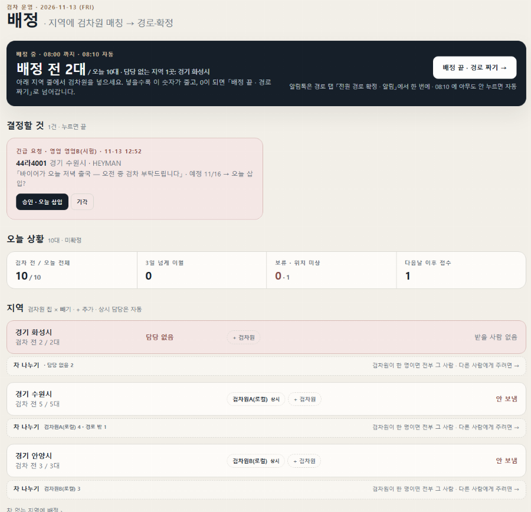
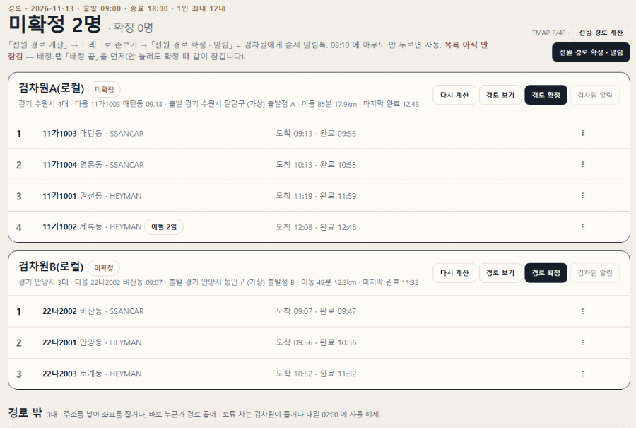
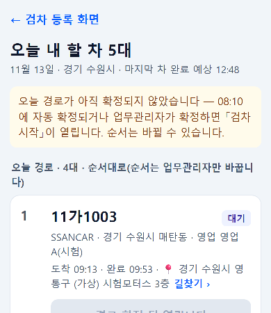
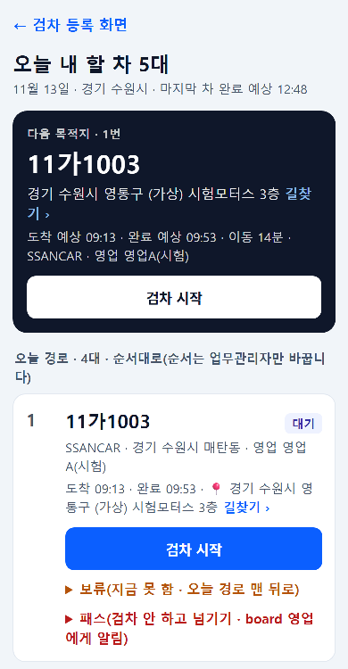
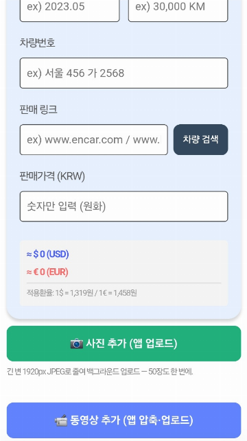
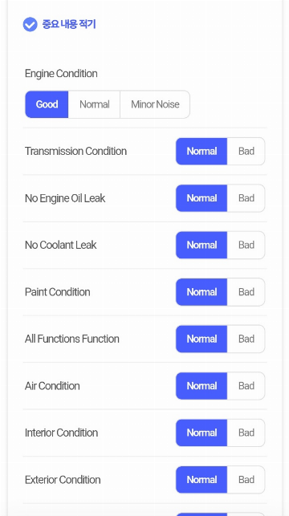
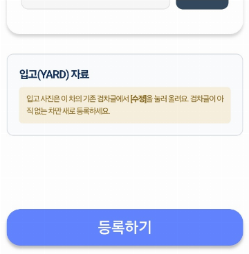
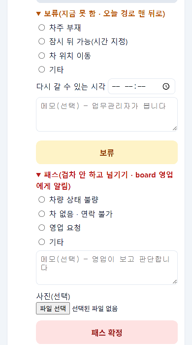
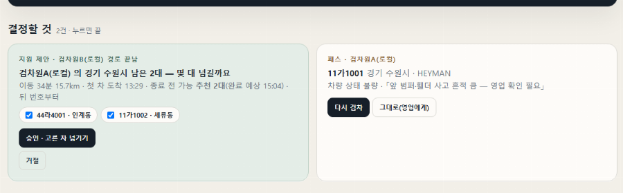

board 에 매입예정으로 올라온 차는 ssancar.com 검차 목록에 들어갑니다. 아침에 검차 담당(팀장)이 지역마다 검차원을 넣고 방문 순서를 정하면, 검차원은 검차앱 「오늘 내 할 차」에서 순서대로 찾아가 사진·영상을 올립니다.
다 올리면 board 쪽 차는 저절로 「전달 대기」로 넘어갑니다. 검차원이 아니어도, 내 차가 지금 어디쯤인지 알려면 이 흐름을 알아 두면 좋습니다.
① 아침 — 팀장이 검차원을 배정합니다
1단계 · 팀장
「SSANCAR 검차 운영」 [배정] 탭에서 지역마다 검차원을 넣습니다
지역 줄의 [+ 검차원]을 눌러 사람을 넣습니다. 「상시」가 붙은 사람은 그 지역을 늘 맡는 검차원이라 자동으로 들어갑니다. 담당이 없는 지역은 빨간 줄 「담당 없음」으로 보입니다. 다 넣으면 오른쪽 위 [배정 끝 · 경로 짜기 →]를 누릅니다.
board 영업이 보낸 긴급 검차 요청은 「결정할 것」에 빨간 카드로 뜹니다. [승인 · 오늘 삽입]을 누르면 그 지역 검차원 오늘 목록 맨 끝에 들어가고, [기각]하면 예정일 그대로입니다. 결과는 영업에게 바로 알려집니다.

2단계 · 팀장
[경로·확정] 탭에서 순서를 정하고 [전원 경로 확정 · 알림]을 누릅니다
[전원 경로 계산]을 누르면 검차원마다 방문 순서와 도착 예상 시각이 나옵니다. 줄 오른쪽 손잡이를 끌어 순서를 바꾸거나 [옮기기]로 다른 검차원에게 넘길 수 있습니다. [전원 경로 확정 · 알림]을 누르면 검차원마다 순서 알림톡이 갑니다. 아무도 누르지 않으면 아침에 정해진 시각에 저절로 확정됩니다.
아래 「경로 밖」에는 위치를 모르는 차가 모입니다. 「매매단지 고르기」나 주소를 넣어 주면 경로에 들어갑니다.

3단계 · 알림톡
검차원에게 「검차 배정 안내」가 갑니다
[사내 업무용] 검차 배정 안내 경기 수원시
담당자님, 검차 일정이 배정되어 안내드립니다.
■ 검차일: 11/13
■ 지역: 경기 수원시
■ 검차 대상: 4대
출발 09:00 · 순서대로 진행(순서는 관리자만 바꿉니다)
1. 11가1003 · 매탄동 09:13
2. 11가1004 · 영통동 10:13
3. 11가1001 · 권선동 11:19
4. 11가1002 · 세류동 12:08
■ 함께 배정: 없음
검차 화면 「오늘 내 할 차」에서 확인 후 검차를 진행해 주세요.
사내 업무 시스템에서 검차 담당자에게만 발송되는 내부 운영 알림입니다.번호판·동·시각은 예시입니다
② 검차원 — 순서대로 찾아가 올립니다
4단계 · 검차원
검차앱 「오늘 내 할 차」를 엽니다
경로가 확정되기 전에는 노란 안내와 함께 모든 버튼이 회색 「경로 확정 뒤 열립니다」입니다. 확정되면 맨 위 검은 카드 「다음 목적지」에 첫 차가 나오고 [검차 시작]이 열립니다. 주소 옆 「길찾기 ›」를 누르면 지도 길찾기가 열립니다.
영업이 남긴 말은 노란 상자 「추가 검사 요청: …」으로 보입니다. [검차 시작]은 다음 차 하나에만 열리고, 순서는 검차원이 바꿀 수 없습니다.


5단계 · 검차원
[검차 시작]을 누르고 사진·영상을 올립니다
[검차 시작]을 누르면 검차 등록 화면으로 넘어가고 차량번호가 채워져 있습니다(이때 board 영업 화면에는 「검차중」이 뜹니다). 차 정보를 고른 뒤 아래 두 버튼으로 올립니다.
- [📷 사진 추가 (앱 업로드)] — 여러 장을 한 번에 고릅니다. 앱이 줄여서 뒤에서 올립니다.
- [📹 동영상 추가 (앱 압축·업로드)] — 앱이 압축해서 뒤에서 올립니다. 화면을 꺼도 계속 올라갑니다.

6단계 · 검차원
「중요 내용 적기」를 고르고 [등록하기]를 누르면 끝입니다
엔진·변속기·누유·도장 같은 항목을 Normal / Bad 로 고르고, 따로 볼 것은 「특이사항 · 자유 메모」에 적습니다. 맨 아래 [등록하기]를 누르는 순간이 검차 완료입니다(완료 버튼은 따로 없습니다). 「오늘 내 할 차」로 돌아가면 그 차는 흐리게 「완료」로 바뀌고 다음 차가 열립니다.


③ 검차를 못 할 때
7단계 · 검차원
잠시 못 하면 「보류」, 아예 넘기면 「패스」
- 「보류(지금 못 함 · 오늘 경로 맨 뒤로)」 — 차주 부재·잠시 뒤 가능·차 위치 이동·기타 가운데 고르고 [보류]. 그 차가 내 경로 맨 뒤로 가고 다음 차가 열립니다. 영업에게는 알려지지 않습니다.
- 「패스(검차 안 하고 넘기기 · board 영업에게 알림)」 — 차량 상태 불량·차 없음/연락 불가·영업 요청·기타 가운데 고르고, 메모·사진을 붙여 [패스 확정]. board 영업 화면에 빨간 「검차 보류 · 사유」로 뜹니다.
잘못 눌렀으면 「되돌리기(다시 대기)」(패스)·「보류 풀기(다시 대기)」(보류)·「시작 취소」(시작)로 되돌립니다.

8단계 · 팀장
패스·지원은 「결정할 것」 카드에서 정합니다
검차원이 패스하면 팀장 화면에 카드가 생깁니다. [다시 검차]로 되돌리거나 [그대로(영업에게)]로 판단을 영업에게 넘깁니다. 자기 경로를 다 끝낸 검차원이 생기면 초록 「지원 제안」 카드가 떠서, 다른 검차원의 남은 차를 골라 [승인 · 고른 차 넘기기]로 넘길 수 있습니다(넘겨받는 검차원에게 알림톡이 갑니다).

9단계 · 알림톡
한 지역이 다 끝나면 팀장에게 「검차 지역 완료」가 갑니다
[사내 업무용] 검차 지역 완료 경기 안양시
담당자님, 배정된 지역의 검차가 모두 처리되어 안내드립니다.
■ 검차일: 11/13
■ 지역: 경기 안양시
■ 처리: 검차 3대 · 패스 0대
■ 담당 검차원: 검차원B
[다른 지역 남은 검차]
· 경기 수원시 4대
· 경기 화성시 2대
지원이 필요한 지역이 있으면 관리자 화면에서 배정을 추가해 주세요.
사내 업무 시스템에서 검차 업무관리자에게만 발송되는 내부 운영 알림입니다.지역·대수·이름은 예시입니다
알아 둘 것
- 검차일은 평일만입니다. 아침 마감 뒤에 들어온 차와 못 끝낸 차는 다음 영업일 목록으로 넘어갑니다(「이월 N일」 표시).
- 매매단지를 골라도 검차원에게는 단지 이름이 아니라 주소와 「길찾기 ›」가 보입니다.
- 「추가 검사 요청」은 「오늘 내 할 차」에만 보이고, 검차 등록 화면에는 나오지 않습니다. 출발 전에 읽어 두세요.
- 영업이 보낸 긴급 요청은 승인되기 전까지 검차원 화면에 나오지 않습니다. 팀장에게 요청이 왔다는 알림톡은 없으니 「결정할 것」 카드를 자주 확인하세요.
- 검차원 휴대폰 번호가 등록돼 있지 않으면 배정 알림톡이 가지 않습니다(팀장 화면에 「휴대폰 없음」 표시).
- 영업 쪽에서 보는 검차 상태는 「검차 기다리기」 가이드에 있습니다.